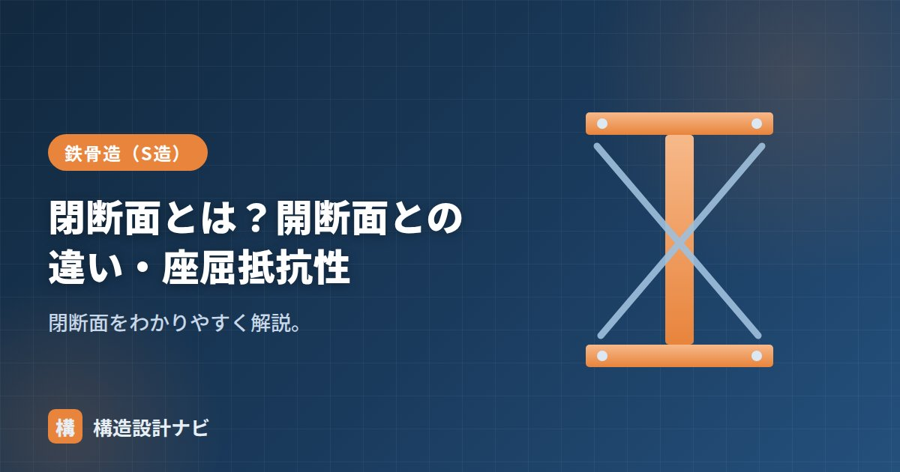

溝形断面とは？チャンネル材の特徴・規格・強度とリップ溝形との違い

溝形断面とは、カタカナの「コ」に似た形状の断面のことです。この断面を持つ鋼材を溝形鋼といい、チャンネル材とも呼ばれます。母屋・胴縁・ブレースといった二次部材によく使われる、身近な形鋼です。
ただし断面が左右非対称であるため、荷重の向きによって使い方が変わります。とくに「せん断中心が断面の外にある」という性質は、知らずに使うと思わぬねじれを招きます。この記事では、溝形断面の意味と特徴、規格と断面性能、そして混同されやすいリップ溝形鋼（Cチャン）との違いを整理します。
- 溝形断面は2枚のフランジと1枚のウェブからなる「コ」の字形。図面記号は「[」。
- 「Cチャン」はリップ溝形鋼の通称で、溝形鋼とは板厚も規格も別物。
- 弱点は①弱軸方向の性能が極端に低い ②せん断中心が断面の外にありねじれるの2つ。
- 対処は2本を背中合わせにする、振れ止めを入れる、周囲の部材で拘束する、など。
溝形断面とは
溝形断面とは、カタカナの「コ」に似た形状の断面です。2枚のフランジと1枚のウェブで構成され、H形断面を中央で半分に切った形といえばイメージしやすいでしょう。この断面を持つ鋼材が溝形鋼で、チャンネルとも呼ばれます。
溝形鋼は主に二次部材として使われます。母屋・胴縁・振れ止め・階段のささら桁・ブレースなどが代表例です。H形鋼のように主要な柱や梁に使われることは多くありません。その理由は、この断面が持つ2つの弱点にあります。
「Cチャン」と呼ぶのはリップ溝形鋼のほう
先に用語の整理をしておきます。現場で「Cチャン」といえば、ほぼ例外なくリップ溝形鋼を指します。溝形鋼（チャンネル）とは板厚も規格も製法もまったく別物なので、混同すると発注ミスにつながります。
| 溝形鋼（チャンネル） | リップ溝形鋼（Cチャン） | |
|---|---|---|
| 図面記号 | [ | C |
| 表記例 | [-150×75×6.5×10 | C-100×50×20×2.3 |
| 数字の意味 | せい×幅×ウェブ厚×フランジ厚 | せい×幅×リップ×板厚 |
| 規格 | JIS G 3192（熱間圧延形鋼） | JIS G 3350（一般構造用軽量形鋼） |
| 材質 | SS400など | SSC400 |
| 製法 | 熱間圧延 | 冷間成形（常温で折り曲げ） |
| 板厚 | 5mm以上 | 1.6〜4.5mm程度（薄肉） |
| 形状 | 「コ」の字 | 「コ」の字＋端部の折り返し（リップ） |
| 主な用途 | 二次部材・ブレース・ささら桁 | 母屋・胴縁・軽量鉄骨造の柱梁 |
リップ溝形鋼のリップとは、溝の口を内側に折り返した小さな出っ張りのことです。これがあるだけで板の縁がへこみにくくなり（局部座屈しにくくなり）、薄い板でも断面性能を確保できます。薄板で成立させるための工夫なので、板厚が確保されている溝形鋼には必要ありません。
溝形断面の2つの弱点
① 弱軸方向の性能が極端に低い
溝形断面には強軸と弱軸があります。そして両者の差が非常に大きいのが特徴です。代表サイズで比べてみます。
| 呼称 | Ix（cm⁴） | Iy（cm⁴） | Ix/Iy | ix（cm） | iy（cm） | ix/iy |
|---|---|---|---|---|---|---|
| [-100×50×5×7.5 | 188 | 26.0 | 7.2 | 3.97 | 1.48 | 2.7 |
| [-150×75×6.5×10 | 861 | 117 | 7.4 | 6.03 | 2.22 | 2.7 |
| [-200×80×7.5×11 | 1,950 | 168 | 11.6 | 7.88 | 2.32 | 3.4 |
| [-250×90×9×13 | 4,180 | 294 | 14.2 | 9.74 | 2.58 | 3.8 |
| [-300×90×9×13 | 6,440 | 309 | 20.8 | 11.50 | 2.52 | 4.6 |
| [-380×100×10.5×16 | 15,600 | 565 | 27.6 | 15.00 | 2.85 | 5.3 |
注目すべきは、せいが大きくなるほど比が悪化する点です。[-100では7倍だった Ix/Iy が、[-380では28倍に開きます。せいを増やしても幅はあまり増えないため、強軸ばかりが強くなって弱軸が置いていかれるからです。
とくに問題になるのが断面二次半径 iyです。表を見ると、せいが4倍近く違う[-100と[-380で、iyはどちらも1.5〜2.9cm程度しかありません。座屈の検討に使う細長比 λ ＝ ℓk／i は i が小さいほど大きくなるため、長い部材として使うと弱軸方向の座屈で決まってしまいます。
② せん断中心が断面の外にある
こちらのほうが、溝形断面を扱ううえでの本質的な注意点です。
せん断中心とは、「ここに荷重を通せば、部材がねじれずに曲がる点」のことです。H形鋼や箱形断面のような二重対称断面では、せん断中心は図心と一致します。だから断面の中心に荷重をかければ素直に曲がります。
ところが溝形断面では、せん断中心が断面の外側（ウェブのさらに外、フランジと反対側）にあります。材料が存在しない空間に位置するのです。
しかも溝形断面は開断面です。開断面は閉断面に比べてねじり剛性が桁違いに低いため、わずかなねじりモーメントでも大きくねじれます。「弱軸が弱い」ことと「ねじれる」ことが重なって、曲げ材としては扱いにくい断面になっているのです。
① 2本を背中合わせにする：ウェブどうしを向かい合わせて組むと左右対称になり、せん断中心が図心に戻ります。ブレースや柱で溝形鋼を使うときの定番です。
② 振れ止め・横補剛を入れる：単材で使う場合は、ねじれと弱軸座屈を止める部材を適切な間隔で配置します。
③ ねじれを拘束できる納まりにする：母屋であれば屋根の折板やデッキで上フランジを押さえる、胴縁であれば外壁材で拘束するなど、周囲の部材にねじれ止めを兼ねさせます。
④ 主要な曲げ材には使わない：素直にH形鋼を使うのが最も確実です。溝形鋼を梁に使いたくなるのは「片面が平らで納まりがよいから」という意匠・納まり上の理由であることが多く、その場合は納まりの利点と構造上の手間を天秤にかけて判断します。
規格と断面性能
溝形鋼はJIS G 3192（熱間圧延形鋼の形状・寸法・質量およびその許容差）に規定されています。代表的なサイズの断面性能は次のとおりです。
| 呼称 | 断面積 （cm²） | 単位質量 （kg/m） | Ix （cm⁴） | Zx （cm³） | Iy （cm⁴） | Zy （cm³） |
|---|---|---|---|---|---|---|
| [-75×40×5×7 | 8.82 | 6.92 | 75.3 | 20.1 | 12.2 | 4.47 |
| [-100×50×5×7.5 | 11.92 | 9.36 | 188 | 37.6 | 26.0 | 7.52 |
| [-125×65×6×8 | 17.11 | 13.4 | 424 | 67.8 | 61.8 | 13.4 |
| [-150×75×6.5×10 | 23.71 | 18.6 | 861 | 115 | 117 | 22.4 |
| [-180×75×7×10.5 | 27.20 | 21.4 | 1,380 | 153 | 131 | 24.3 |
| [-200×80×7.5×11 | 31.33 | 24.6 | 1,950 | 195 | 168 | 29.1 |
| [-200×90×8×13.5 | 38.65 | 30.3 | 2,490 | 249 | 277 | 44.5 |
| [-250×90×9×13 | 44.07 | 34.6 | 4,180 | 334 | 294 | 44.5 |
| [-300×90×9×13 | 48.57 | 38.1 | 6,440 | 429 | 309 | 45.7 |
| [-380×100×10.5×16 | 69.39 | 54.5 | 15,600 | 823 | 565 | 73.6 |
強軸まわりの断面係数は Zx ＝ Ix／(H／2) で求まりますが、弱軸まわりはそうなりません。溝形断面は左右非対称で図心がウェブ寄りにあるため、Zy ＝ Iy／(B − Cy) として、図心から遠いほう（フランジ先端側）までの距離で割ります（Cy：ウェブ外面から図心までの距離）。単純に幅の半分で割ると値を誤るので、規格表のZyをそのまま使うのが確実です。
材質と強度
| 項目 | 内容 |
|---|---|
| 一般的な材質 | SS400（一般構造用圧延鋼材） |
| 基準強度 F | 235 N/mm² |
| 引張強さ | 400〜510 N/mm² |
| 長期許容応力度（引張・圧縮・曲げ） | F／1.5 ≒ 157 N/mm² |
| 短期許容応力度 | F ＝ 235 N/mm² |
主に二次部材に用いるため大きな力が作用せず、高強度の鋼材を使う場面はほとんどありません。SN490BやSM490Aといった高強度材の溝形鋼は、流通量も限られます。
注意したいのは溶接性です。SS400は化学成分の上限が規定されておらず、溶接性を保証していません。二次部材の取り付けで溶接を伴う場合、板厚が薄ければ実務上問題になることは少ないものの、重要な部位ではSM材やSN材の採用を検討してください。
混同しやすい用語
| 用語 | 意味 | 溝形断面との関係 |
|---|---|---|
| リップ溝形断面 | 溝形断面の端部にリップ（折り返し）を設けた断面 | 薄板でも断面性能を確保するための形。軽量形鋼に多く、通称Cチャン |
| I形断面 | 2枚のフランジを1枚のウェブで結んだ左右対称の断面 | 溝形断面を2枚背中合わせにすると、近い形になる |
| ハット形断面 | 帽子のような形に折り曲げた断面 | 同じ軽量形鋼の仲間。下地材に使う |
| 開断面 | 断面が閉じていない形状の総称 | 溝形断面は開断面。ねじり剛性が低い |
| せん断中心 | 荷重を通せばねじれずに曲がる点 | 溝形断面では断面の外にある |
| 項目 | 溝形断面（チャンネル） | リップ溝形断面（Cチャン） |
|---|---|---|
| 形状 | カタカナの「コ」形 | 「コ」＋端部の折り返し |
| 断面性能 | 弱軸方向が低い | 同じ板厚なら溝形より高い |
| 主な用途 | 二次部材・ブレース・ささら桁 | 母屋・胴縁・軽量鉄骨造 |
本記事の断面性能はJIS G 3192にもとづく代表的な値をまとめたものです。実際の設計・発注にあたっては、最新の規格表またはメーカーの鋼材ハンドブックで数値をご確認ください。せん断中心の位置は薄肉断面の理論式による概算値で、フィレット（隅の丸み）の影響は含んでいません。
よくある質問
Q1. 溝形鋼とCチャンは同じものですか？
違います。「Cチャン」はリップ溝形鋼の通称で、薄い鋼板を冷間で折り曲げた軽量形鋼（JIS G 3350・SSC400・板厚1.6〜4.5mm程度）を指します。一方、単に「溝形鋼」「チャンネル」というときは熱間圧延の重量形鋼（JIS G 3192・SS400など・板厚5mm以上）です。図面記号も溝形鋼は「[」、リップ溝形鋼は「C」で区別します。見た目は似ていますが板厚も規格も別物なので、発注や積算では取り違えないよう注意してください。
Q2. 溝形断面はなぜ二次部材に使われるのですか？
断面が非対称で弱軸方向の性能が低く、さらにねじれやすいため、大きな曲げを受ける主要な梁には向かないからです。一方、片面が平らで壁や床に密着させやすく、形状が単純で接合部をつくりやすいという利点があります。この特性が、母屋・胴縁・振れ止め・ブレースといった二次部材と相性がよい理由です。
Q3. 溝形鋼を梁として使うとき何に注意しますか？
3点あります。①弱軸方向の断面性能が極端に低いこと（Ix/Iyは6〜28倍）、②せん断中心が断面の外にあるためウェブを鉛直にして荷重をかけるとねじれること、③そのため横座屈が起きやすいことです。対策としては、2本を背中合わせにして対称断面にする、振れ止めを入れる、ねじれを拘束できるディテールにする、といった方法があります。
Q4. せん断中心が断面の外にあるとはどういう意味ですか？
ねじれずに曲げるために力を通すべき点が、断面の材料が存在しない空間にあるという意味です。溝形断面では、せん断中心はウェブの外側（フランジと反対側）に位置します。たとえば[-150×75×6.5×10では図心からせん断中心までが約49mm離れており、これはフランジ幅の3分の2にあたります。図心に荷重をかけると、この距離を腕としたねじりモーメントが必ず生じます。
Q5. 溝形鋼の材質は何を使いますか？
SS400が一般的です。建築の構造計算で使う基準強度Fは235N/mm²、引張強さは400〜510N/mm²です。主に二次部材に用いるため大きな力が作用せず、高強度鋼を使う場面はほとんどありません。溶接を伴う部位ではSS400が溶接性を保証していない点に注意し、必要に応じてSM材やSN材を検討します。
まとめ
- 溝形断面はカタカナの「コ」に似た形状で、2枚のフランジと1枚のウェブからなる。この鋼材が溝形鋼（チャンネル）で、図面記号は「[」。
- 「Cチャン」はリップ溝形鋼の通称で、溝形鋼とは別物。板厚・規格・製法がすべて違うので取り違えない。
- 弱点は2つ。①弱軸方向の性能が極端に低い（Ix/Iyは6〜28倍、せいが大きいほど悪化）。②せん断中心が断面の外にありねじれる。
- 対策は、2本を背中合わせにして対称断面にする、振れ止めを入れる、周囲の部材でねじれを拘束する、など。
- 材質はSS400が一般的（F＝235N/mm²）。主要な曲げ材にはH形鋼を使うのが確実。
形鋼全体の分類は「形鋼とは？」、寸法表記は「形鋼の読み方」、リップ溝形鋼は「軽量形鋼とは？」、ねじれの話は「開断面とは？」と「閉断面とは？」、強軸・弱軸は「H形鋼の強軸・弱軸」をどうぞ。